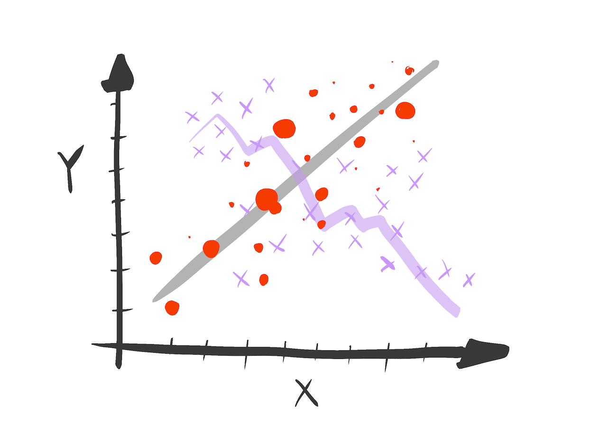
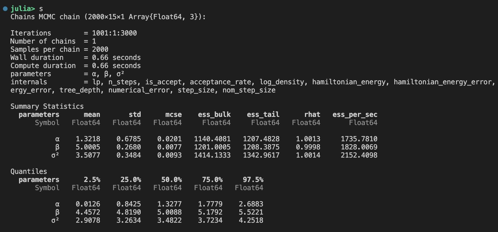
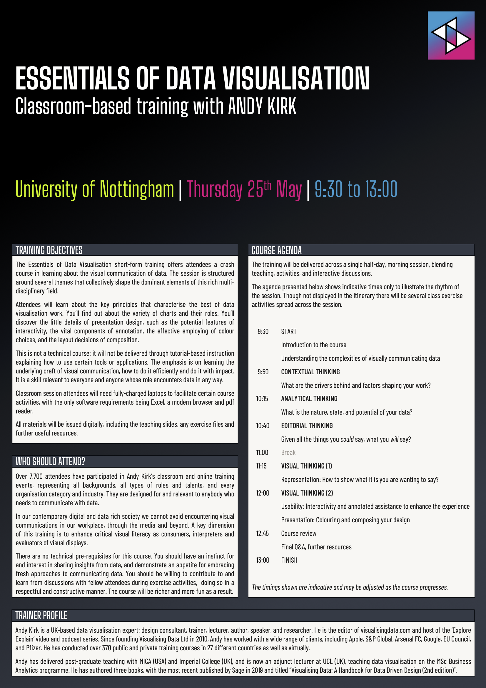
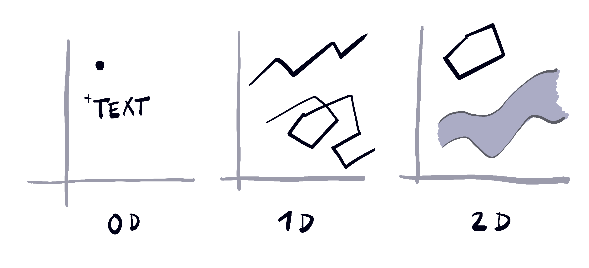
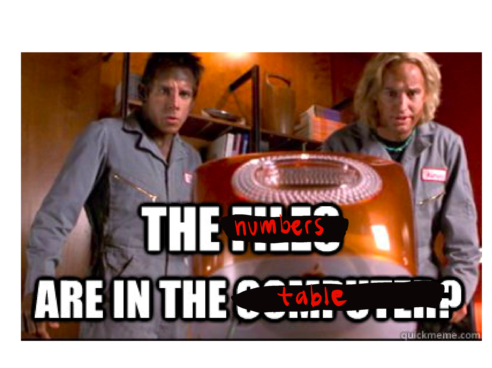

NG data club
Home
Presentations
About
Presentations
Order By
Default
Title
Date - Oldest
Date - Newest
Author
Bayesian Statistics
A dive into the world of Bayesian Statistics! Join us for an interactive session where you’ll learn the fundamentals of Bayesian Statistics and get hands-on practice with…
Apr 1, 2025
Prof. Mark Andrews, NTU
Ridge regression, improving the GLM
Journal club around Prince et al (2022) paper
Background for and discussion around the paper
Improving the accuracy of single-trial fMRI response estimates using GLMsingle. eLife (2022)
by Prince et al.
Mar 18, 2025
Denis Schluppeck
LLMs - large language models
Background, how to use in your code editors, through APIs, etc
An overview of large language model, how to use them in practice (in code editors and through API calls).
Mar 4, 2025
Walter van Heuven
Version control: Zero to hero
Sign up!
- If you don’t have a
github id
, yet… sign up for a free account at https://github.com/
Jan 14, 2025
Denis Schluppeck
R in the browser
Some example code snarfed from https://r-wasm.github.io/quarto-live/
Jan 14, 2025
Denis Schluppeck

ML beginnings…
Intro level information for machine learning enthusiasts
Invalid Date
TBD

Bayesian stats, Hierarchical models
Some notes related to MvR’s presentation on Bayesian stats and
The
posterior distribution
of the parameter(s)
\(\theta\)
is the product of the
likelihood of the data (given the parameters) and the
prior* of the parameter divided by a…
Dec 18, 2024
Denis Schluppeck
Bayesian hierarchical models
A talk about Bayes’ rule, MCMC, …
Some notes on Bayes,
python
and
julia
packages and even some example code on this page
Dec 17, 2024
Mark van Rossum
Non-parametric stats, bootstrap, permutation testing
[notes]
Some notes related to presentation
James Read-Tannock gave talk with general background ideas on non-parametric stats, more classical tests still taught in Psych programmes, and then introduced the ideas of…
Nov 19, 2024
Denis Schluppeck
Non-Normal, No Problem
A Crash Course in Non-Parametric Statistics
There are also some notes from DS with links to PDFs, webpages, and including snippets of
julia
code for experimenting with bootstrap / permutation testing.
Nov 19, 2024
James Read-Tannock, Madan Lab
Ordinal data and counts
Count distributions and analyses – Poisson and Negative Binomial distributions
rendered notes
R markdown file
data files .RData format
Nov 5, 2024
Leonardo Cohen

Data visualistion Essentials
We had a 1/2 day workshop on data visualisation essentials with Andy Kirk, visualisingdata.com.
May 25, 2023
Andy Kirk

Rethinking your plotting habits
Data visualisation block - data club
Want to
Mar 29, 2023
Denis Schluppeck
Data visualisation
In this session we launch the next block of presentations + meetings in which we want to discuss ways of visualising data, what people in different labs use, what works…
Mar 29, 2023
Denis Schluppeck
Effect sizes, statistical power, statistics
DS’s notes
During the sessions we discussed a recent paper on reporting of effect sizes in social and developmental psychology publications
(Weinerová, Szűcs, and Ioannidis 2022)
.
Mar 8, 2023
Josefina Weinerova
Tidy data
slide presentation on the day
Feb 22, 2023
Denis Schluppeck

Tidy data
a lot of data we work with is
tabular
Feb 22, 2023
Denis Schluppeck
Statistical significance, Interactions, Statistics
The next session will be led by Hazem Toutounji who will present around a paper:
Feb 8, 2023
Hazem Toutounji
Statistical significance, Interactions, Statistics /
notes
think about e-notebooks
Jan 25, 2023
Everyone
Mixing writing and
r
Here is an example of a document that produces a plot from some data that’s stored separately.
Jan 4, 2023
Denis Schluppeck
Mixing writing and
python
Here is an example of a document that produces a plot from some data that’s stored separately.
Jan 4, 2023
Denis Schluppeck
Mixing writing and
julia
Here is an example of a document that produces a plot from some data that’s stored separately.
Jan 4, 2023
Denis Schluppeck
Mixing text and computations
Mixing text + computations, Markdown,
quarto
, webpages,
pandoc
Jan 4, 2023
Denis Schluppeck
Mixing text + computations
Markdown, quarto, webpages, pandoc
often useful to produce short documents that mix code snippets, plots, text, images
Jan 4, 2023
Denis Schluppeck
Linear regression
[session notes]
Some details about fitting line through data points as a canonical example, but also relationship to other more complex examples that can be cast as linear regression…
Dec 14, 2022
Denis Schluppeck
NG data club
Meeting time + place
Nov 23, 2022
Schluppeck / van Rossum
Data governance, ethics, FAIR principles, …
Damian Eke is a colleague in the Faculty of Science (based in Comp Sci). He is a philosopher who works on Responsible Research and Innovation, Ethics and governance of AI…
Invalid Date
Damian Eke
No matching items